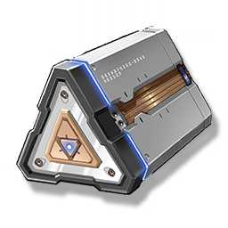

Core module
Valuables

Used to activate the positioning function of the Waypoint.
The core module for the Waypoint to collect, share, and update location information, the interface between the Waypoint and the Resonance Beacon base station, is the most important component to start and maintain the Resonance Beacon.